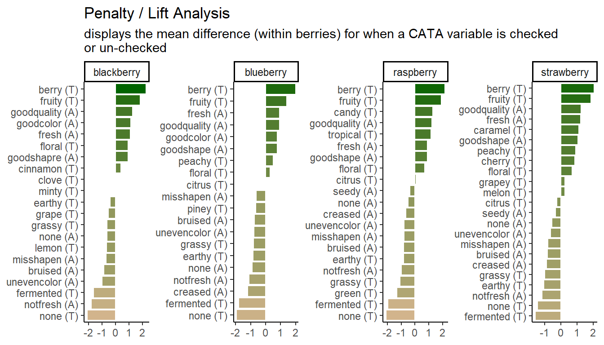
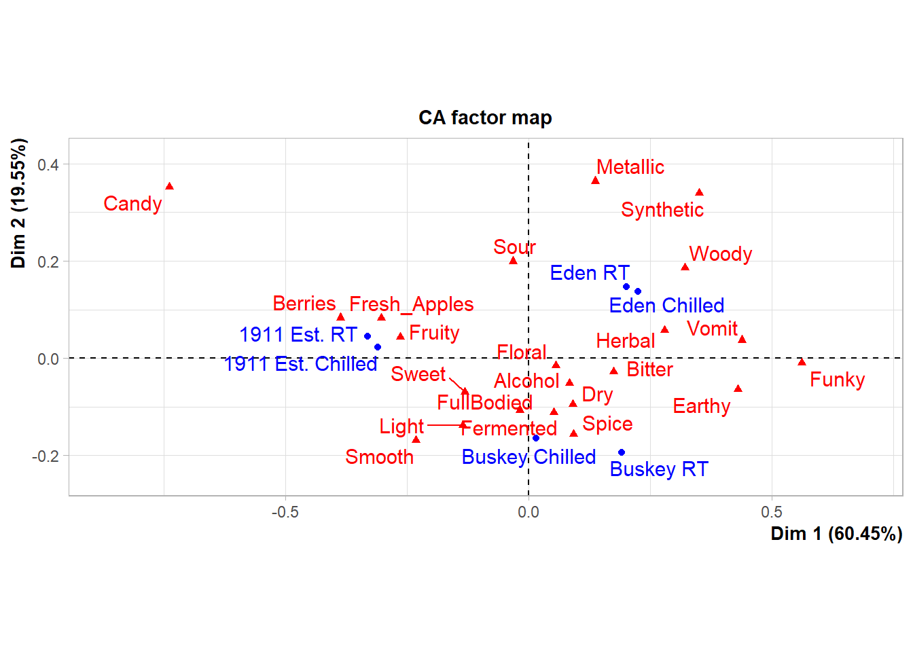

2 Importing and wrangling data
Now that everyone is on the same page for how we’re going to use R, we’re going to dive right into importing our data into R, exploring it, and–most importantly–visualizing it. In this part of the tutorial, we are going to focus on getting data into R and manipulating it.
Personally, I prefer to see the reason for doing something, rather than being shown a bunch of building blocks and not seeing how they fit together. Therefore, we’re going to start off this section with a complete work flow for importing and visualizing some real results, and then work backward as we unpack how and why we’ve taken particular steps.
2.1 Motivation: exploring berry and cider CATA/liking data
Before we begin, we need to make sure we’ve loaded the packages we’re going to use.
The plan here is to present “full” workflows for data import, wrangling, and visualization below so as to give a skeleton to work through. This is going to look like a lot of code at once, but I don’t use anything in these workflows that we will not be covering (in some way!) today. Hopefully, by the end of today’s workshop you will be able both to understand and dissect complex code and use it to build your own analyses and visualizations.
2.1.1 Berries
Here we are going to import and process data from a study on berries. These data come from a large, central-location study on berries, the methodological details of which are published in Yeung et al. (2021). Very briefly, the data describe the attributes and liking scores reported by consumers for a variety of berries across multiple CLTs. A total of 969 participants (Subject Code) and 23 berries (Sample Name) were involved in these tests, with only one species of berry (blackberry, blueberry, raspberry, or strawberry) presented during each CLT. In the actual experimental design, subjects got multiple sample sets (so there are not 969 unique subjects), but here we will treat them as unique for ease of description.
# Import the data
raw_berry_data <-
read_csv(file = "data/clt-berry-data.csv") %>%
select(where(~ !all(is.na(.))))
cleaned_berry_data <-
raw_berry_data %>%
# Get the relevant columns
select(`Subject Code`,
berry,
sample,
starts_with("cata_"),
contains("overall")) %>%
# Rescale the LAM and US scales to a 9-pt range
mutate(lms_overall = (lms_overall + 100) * (8 / 200) + 1,
us_overall = (us_overall + 0) * (8 / 15) + 1) %>%
# Switch the 3 overall liking columns into a single column
pivot_longer(contains("overall"),
names_to = "hedonic_scale",
values_to = "rating",
values_drop_na = TRUE) %>%
# Let's make all the CATA variables into a single column to make life easier
# (and get rid of those NAs)
pivot_longer(starts_with("cata_"),
names_to = "cata_variable",
values_to = "checked",
names_transform = ~str_remove(., "cata_"),
values_drop_na = TRUE)
berry_penalty_analysis_data <-
cleaned_berry_data %>%
group_by(berry, cata_variable, checked) %>%
summarize(penalty_lift = mean(rating),
count = n()) %>%
ungroup()
# Make a plot of the overall penalty/lift for checked attributes
p1_berry_penalty <-
berry_penalty_analysis_data %>%
select(-count) %>%
pivot_wider(names_from = checked,
values_from = penalty_lift,
names_prefix = "checked_") %>%
group_by(berry, cata_variable) %>%
summarize(penalty_lift = checked_1 - checked_0) %>%
# We can tidy up our CATA labels
separate(cata_variable,
into = c("mode", "variable"),
sep = "_") %>%
# Fix a typo
mutate(mode = str_replace(mode, "appearane", "appearance")) %>%
mutate(mode = case_when(mode == "taste" ~ "(T)",
mode == "appearance" ~ "(A)")) %>%
unite(variable, mode, col = "cata_variable", sep = " ") %>%
# We are using a function from tidytext that makes faceting the final figure
# easier
mutate(cata_variable = tidytext::reorder_within(x = cata_variable,
by = penalty_lift,
within = berry)) %>%
#And finally we plot!
ggplot(mapping = aes(x = cata_variable, y = penalty_lift)) +
geom_col(aes(fill = penalty_lift), color = "white", show.legend = FALSE) +
facet_wrap(~berry, scales = "free", nrow = 1) +
tidytext::scale_x_reordered() +
coord_flip() +
theme_classic() +
scale_fill_gradient(low = "tan", high = "darkgreen") +
labs(x = NULL, y = NULL,
title = "Penalty / Lift Analysis",
subtitle = "displays the mean difference (within berries) for when a CATA variable is checked\nor un-checked")
p1_berry_penalty
2.1.2 Cider
Now, let’s get our cider data. These data come from a small consumer study on 3 commercial “hard” (alcoholic) ciders, served in two conditions (chilled or unchilled) to 48 consumers, who used a pre-defined CATA lexicon, rated overall liking, and evaluated cider “dryness” on a 4-pt, structured line scale. The full details of the study are published in Calvert et al. (2022).
raw_cider_data <-
read_csv("data/CiderDryness_SensoryDATA.csv")
cider_penalty_data <-
raw_cider_data %>%
pivot_longer(Fresh_Apples:Synthetic,
names_to = "cata_variable",
values_to = "checked") %>%
group_by(cata_variable, checked) %>%
summarize(rating = mean(Liking),
count = n()) %>%
mutate(proportion = count / sum(count)) %>%
ungroup()
# Define the "important" penalty/lift zones
zones <-
tribble(~penalty_lift, ~xmin, ~xmax, ~ymin, ~ymax,
"penalty", 0.25, Inf, -Inf, -1,
"lift", 0.25, Inf, 1, Inf)
# Let's make a plot where we take into account the frequency of checking as well
# as the penalty
p2_cider_penalty <-
cider_penalty_data %>%
select(-count, -proportion) %>%
pivot_wider(names_from = checked,
values_from = rating) %>%
mutate(penalty = `1` - `0`) %>%
left_join(cider_penalty_data %>%
filter(checked == 1) %>%
select(cata_variable, proportion)) %>%
# And now we plot!
ggplot(aes(x = proportion, y = penalty)) +
geom_hline(yintercept = 0) +
geom_rect(aes(xmin = xmin, ymin = ymin,
xmax = xmax, ymax = ymax,
fill = penalty_lift, color = penalty_lift),
data = zones,
inherit.aes = FALSE,
linetype = 2) +
geom_point() +
ggrepel::geom_label_repel(aes(label = cata_variable), alpha = 2/3) +
scale_fill_manual("penalty / lift zone:",
values = alpha(c( "darkgreen", "tan"), alpha = 1/4)) +
scale_color_manual(NULL, values = c( "darkgreen", "tan"), breaks = NULL) +
theme_bw() +
theme(panel.grid.minor = element_blank(),
panel.grid.major = element_blank(),
legend.position = "top") +
labs(x = "Proportion of checks for CATA attribute",
y = "Change in average liking when CATA\nattribute is checked",
title = "Penalty/Lift Analysis",
subtitle = "in which average change is plotted against check frequency")
p2_cider_penalty
2.1.3 “Publication quality”
What do we mean by “publication quality” visualizations? Neither of us are theorists of visualization–for that, we would recommend that you look at the excellent work from Claus Wilke and Kieran Healey. We will not be discussing (in any detail) ideas about which color palettes best communicate different types of data, what kinds of displays are most effective (box plots vs violin plots vs …), or whether pie charts are really so bad (mostly yes).
Rather, we have noticed that most R packages for data analysis provide visualizations as part of their output, and many sensory scientists are using these default outputs in publications. This is annoying because often these visualizations are meant to be part of the data exploration/analysis process: they are not polished or they don’t display the data to its best advantage (whatever that is for the particular case). In this workshop, we want to help you develop the competency to alter or re-make these visualizations for yourself so that you can produce visualizations that are relevant to your application, that are attractive and easy to read.
As an example, the FactoMineR package has excellent default visualizations for exploring and understanding the basic outputs of many common multivariate analyses used by sensory scientists. We can take a look at our cider CATA data visualized as a symmetric CA “biplot” without much effort:
ca_cider <-
raw_cider_data %>%
select(Sample_Name, Temperature, Fresh_Apples:Synthetic) %>%
unite(Sample_Name, Temperature, col = "sample", sep = " ") %>%
group_by(sample) %>%
summarize(across(where(is.numeric), ~sum(.))) %>%
column_to_rownames("sample") %>%
FactoMineR::CA(graph = FALSE)
p3_cider_factominer <- plot(ca_cider)
p3_cider_factominer
But there might be things about this we want to change! It would be very helpful to know, for example, that this is a ggplot2 object that can be altered by a basic handful of standardized syntax. For example:
p3_cider_factominer +
theme_dark() +
labs(caption = "Now we can say some more things!",
subtitle = "of 6 ciders tasted by 48 subjects")
Like I said, we’re not here to tell you how your plots should look…
The motivating point, here, is to be able to make visualizations that accomplish what you want them to, rather than being at the mercy of packages that have certain defaults built in.
2.2 Getting data into R
Before we’re able to analyze anything, we need to get data into R. In the workshop archive you downloaded, the data/ directory has files called clt-berry-data.csv and CiderDryness_SensoryDATA.csv. These are the files that hold the raw data.
2.2.1 Where the data live
To get these data into R, we need to briefly talk about working directories because this is how R “sees” your computer. It will look first in the working directory, and then you will have to tell it where the file is relative to that directory. If you have been following along and opened up the .Rproj file in the downloaded archive, your working directory should be the archive’s top level, which will mean that we only need to point R towards the data/ folder and then the clt-berry-data.csv file. We can check the working directory with the getwd() function.
## [1] "C:/Users/lhamilton/Documents/sensometrics-r-tutorial-2024"Therefore, relative to the working directory, the file path to this data is data/clt-berry-data.csv. Please note that this is the UNIX convention for file paths: in Windows, the backslash \ is used to separate directories. Happily, RStudio will translate between the two conventions, so you can just follow along with the macOS/UNIX convention (/) in this workshop.
2.2.2 Getting different kinds of files into R
The first step is to notice this is a .csv file, which stands for comma-separated value. This means our data, in raw format, looks something like this:
# Comma-separated data (regarding Jake's cats)
cat_acquisition_order,name,weight,age\n
1,Nick,9,17\n
2,Margot,7,16\n
3,Little Guy,13,4\nEach line represents a row of data, and each field is separated by a comma (,). We can read this kind of data into R by using the read_csv() function (this is a nicer version of the default read.csv() function, and we get access to it by loading tidyverse with library(tidyverse)).
## Rows: 7507 Columns: 92
## ── Column specification ────────────────────────────────────────────────────────
## Delimiter: ","
## chr (7): Start Time (UTC), End Time (UTC), Sample Name, verbal_likes, verba...
## dbl (83): Subject Code, Participant Name, Serving Position, Sample Identifie...
## lgl (2): Gender, Age
##
## ℹ Use `spec()` to retrieve the full column specification for this data.
## ℹ Specify the column types or set `show_col_types = FALSE` to quiet this message.## # A tibble: 7,507 × 92
## `Subject Code` `Participant Name` Gender Age `Start Time (UTC)`
## <dbl> <dbl> <lgl> <lgl> <chr>
## 1 1001 1001 NA NA 6/13/2019 21:05
## 2 1001 1001 NA NA 6/13/2019 20:55
## 3 1001 1001 NA NA 6/13/2019 20:49
## 4 1001 1001 NA NA 6/13/2019 20:45
## 5 1001 1001 NA NA 6/13/2019 21:00
## 6 1001 1001 NA NA 6/13/2019 21:10
## 7 1002 1002 NA NA 6/13/2019 20:08
## 8 1002 1002 NA NA 6/13/2019 19:57
## 9 1002 1002 NA NA 6/13/2019 20:13
## 10 1002 1002 NA NA 6/13/2019 20:03
## # ℹ 7,497 more rows
## # ℹ 87 more variables: `End Time (UTC)` <chr>, `Serving Position` <dbl>,
## # `Sample Identifier` <dbl>, `Sample Name` <chr>, `9pt_appearance` <dbl>,
## # pre_expectation <dbl>, jar_color <dbl>, jar_gloss <dbl>, jar_size <dbl>,
## # cata_appearance_unevencolor <dbl>, cata_appearance_misshapen <dbl>,
## # cata_appearance_creased <dbl>, cata_appearance_seedy <dbl>,
## # cata_appearance_bruised <dbl>, cata_appearance_notfresh <dbl>, …## Rows: 288 Columns: 27
## ── Column specification ────────────────────────────────────────────────────────
## Delimiter: ","
## chr (3): Sample_Name, Temperature, Panelist_Code
## dbl (24): MerlynScale_Ranking, Fresh_Apples, Fermented, Herbal, Dry, Spice, ...
##
## ℹ Use `spec()` to retrieve the full column specification for this data.
## ℹ Specify the column types or set `show_col_types = FALSE` to quiet this message.## # A tibble: 288 × 27
## Sample_Name Temperature Panelist_Code MerlynScale_Ranking Fresh_Apples
## <chr> <chr> <chr> <dbl> <dbl>
## 1 1911 Est. Chilled 001 2.3 1
## 2 Buskey Chilled 001 3.5 1
## 3 Eden Chilled 001 2.8 0
## 4 1911 Est. RT 001 4.2 0
## 5 Buskey RT 001 2 0
## 6 Eden RT 001 4 0
## 7 1911 Est. Chilled 002 3 1
## 8 Buskey Chilled 002 3.3 0
## 9 Eden Chilled 002 3.5 1
## 10 1911 Est. RT 002 4.5 0
## # ℹ 278 more rows
## # ℹ 22 more variables: Fermented <dbl>, Herbal <dbl>, Dry <dbl>, Spice <dbl>,
## # Fruity <dbl>, Smooth <dbl>, Alcohol <dbl>, Light <dbl>, Sweet <dbl>,
## # Woody <dbl>, Berries <dbl>, Sour <dbl>, Funky <dbl>, FullBodied <dbl>,
## # Metallic <dbl>, Floral <dbl>, Candy <dbl>, Bitter <dbl>, Vomit <dbl>,
## # Earthy <dbl>, Synthetic <dbl>, Liking <dbl>Remember that we need to store objects in the Environment if we want to access and modify them. Therefore, we need to remember to store these somewhere.
raw_berry_data <- read_csv(file = "data/clt-berry-data.csv")
raw_cider_data <- read_csv(file = "data/CiderDryness_SensoryDATA.csv")As a note, in many countries the separator (delimiter) will be the semi-colon (;), since the comma is used as the decimal marker. To read files formatted this way, you can use the read_csv2() function. If you encounter tab-separated values files (.tsv) you can use the read_tsv() function. If you have more non-standard delimiters, you can use the read_delim() function, which will allow you to specify your own delimiter characters. Excel stores data by default in the .xlsx format, which can be read by installing and using the readxl package (or saving Excel data as .csv). You can also read many other formats of tabular data using the rio package (“read input/output”), which can be installed from CRAN (using, as you have learned, install.packages("rio")).
The read_csv() function creates a type of object in R called a tibble, which is a special type of data.frame. These are rectangular “spreadsheet-like” objects like you would encounter in Excel or manipulate in JMP or SPSS.
We can learn more about the objects we just created by either examining them in the Environment tab or, preferably, using the glimpse() function to get a look at what we have (note that glimpse() comes from tidyverse; if you don’t load it by running library(tidyverse) earlier in your session you will get an error).
## Rows: 7,507
## Columns: 92
## $ `Subject Code` <dbl> 1001, 1001, 1001, 1001, 1001, 1001, 1002, …
## $ `Participant Name` <dbl> 1001, 1001, 1001, 1001, 1001, 1001, 1002, …
## $ Gender <lgl> NA, NA, NA, NA, NA, NA, NA, NA, NA, NA, NA…
## $ Age <lgl> NA, NA, NA, NA, NA, NA, NA, NA, NA, NA, NA…
## $ `Start Time (UTC)` <chr> "6/13/2019 21:05", "6/13/2019 20:55", "6/1…
## $ `End Time (UTC)` <chr> "6/13/2019 21:09", "6/13/2019 20:59", "6/1…
## $ `Serving Position` <dbl> 5, 3, 2, 1, 4, 6, 3, 1, 4, 2, 6, 5, 2, 4, …
## $ `Sample Identifier` <dbl> 1426, 3167, 4624, 5068, 7195, 9161, 1426, …
## $ `Sample Name` <chr> "raspberry 6", "raspberry 5", "raspberry 2…
## $ `9pt_appearance` <dbl> 4, 8, 4, 7, 7, 7, 6, 8, 8, 7, 9, 8, 5, 5, …
## $ pre_expectation <dbl> 2, 4, 2, 4, 3, 4, 2, 3, 5, 3, 4, 5, 3, 3, …
## $ jar_color <dbl> 2, 3, 2, 2, 4, 4, 2, 3, 3, 2, 3, 4, 3, 3, …
## $ jar_gloss <dbl> 4, 3, 2, 3, 3, 3, 4, 3, 4, 4, 2, 4, 3, 3, …
## $ jar_size <dbl> 2, 3, 3, 4, 3, 3, 4, 3, 5, 3, 3, 4, 3, 3, …
## $ cata_appearance_unevencolor <dbl> 0, 0, 0, 0, 1, 0, 0, 1, 1, 1, 0, 0, 0, 0, …
## $ cata_appearance_misshapen <dbl> 1, 0, 0, 0, 1, 0, 0, 0, 0, 0, 0, 0, 1, 1, …
## $ cata_appearance_creased <dbl> 0, 0, 0, 0, 0, 0, 0, 0, 1, 1, 0, 0, 1, 1, …
## $ cata_appearance_seedy <dbl> 0, 0, 0, 0, 0, 0, 0, 0, 0, 0, 0, 0, 0, 0, …
## $ cata_appearance_bruised <dbl> 0, 0, 0, 0, 0, 0, 0, 0, 1, 1, 0, 0, 0, 1, …
## $ cata_appearance_notfresh <dbl> 1, 0, 1, 0, 0, 0, 0, 0, 0, 0, 0, 0, 1, 1, …
## $ cata_appearance_fresh <dbl> 0, 1, 0, 1, 0, 1, 1, 1, 1, 1, 1, 1, 0, 0, …
## $ cata_appearance_goodshape <dbl> 0, 1, 0, 1, 0, 1, 1, 1, 0, 0, 1, 1, 0, 0, …
## $ cata_appearance_goodquality <dbl> 0, 1, 0, 1, 0, 1, 1, 1, 1, 0, 1, 1, 1, 0, …
## $ cata_appearance_none <dbl> 0, 0, 0, 0, 0, 0, 0, 0, 0, 0, 0, 0, 0, 0, …
## $ `9pt_overall` <dbl> 4, 9, 3, 7, 4, 4, 4, 7, 7, 9, 7, 2, 8, 7, …
## $ verbal_likes <chr> "Out of the two, there was one that had a …
## $ verbal_dislikes <chr> "There were different flavors coming from …
## $ `9pt_taste` <dbl> 4, 9, 3, 6, 3, 3, 4, 4, 6, 9, 6, 2, 8, 7, …
## $ grid_sweetness <dbl> 3, 6, 3, 6, 2, 3, 3, 2, 2, 6, 4, 1, 6, 4, …
## $ grid_tartness <dbl> 6, 5, 5, 3, 5, 6, 5, 5, 5, 2, 2, 7, 4, 5, …
## $ grid_raspberryflavor <dbl> 4, 7, 2, 6, 2, 3, 2, 6, 2, 7, 2, 2, 6, 5, …
## $ jar_sweetness <dbl> 2, 3, 2, 3, 2, 1, 1, 1, 1, 3, 2, 1, 3, 3, …
## $ jar_tartness <dbl> 4, 3, 3, 3, 4, 5, 4, 4, 4, 3, 4, 5, 3, 3, …
## $ cata_taste_floral <dbl> 0, 0, 0, 1, 0, 0, 0, 1, 1, 1, 1, 0, 0, 0, …
## $ cata_taste_berry <dbl> 1, 1, 0, 1, 0, 0, 0, 1, 0, 1, 0, 0, 1, 1, …
## $ cata_taste_green <dbl> 0, 0, 0, 1, 1, 1, 0, 0, 1, 0, 0, 1, 0, 0, …
## $ cata_taste_grassy <dbl> 0, 0, 0, 0, 1, 1, 1, 0, 1, 0, 1, 1, 0, 1, …
## $ cata_taste_fermented <dbl> 0, 0, 1, 0, 0, 0, 0, 0, 0, 0, 0, 0, 0, 0, …
## $ cata_taste_tropical <dbl> 1, 1, 0, 0, 0, 0, 0, 0, 0, 1, 0, 0, 1, 1, …
## $ cata_taste_fruity <dbl> 1, 1, 0, 1, 0, 0, 0, 0, 0, 1, 0, 0, 1, 0, …
## $ cata_taste_citrus <dbl> 1, 0, 0, 0, 0, 1, 1, 0, 0, 0, 1, 0, 1, 1, …
## $ cata_taste_earthy <dbl> 0, 0, 0, 0, 1, 0, 0, 1, 0, 0, 0, 1, 0, 0, …
## $ cata_taste_candy <dbl> 0, 0, 1, 0, 0, 0, 0, 0, 0, 0, 0, 0, 1, 0, …
## $ cata_taste_none <dbl> 0, 0, 0, 0, 0, 0, 0, 0, 0, 0, 0, 0, 0, 0, …
## $ `9pt_texture` <dbl> 6, 8, 2, 8, 5, 6, 6, 9, 8, 7, 7, 7, 8, 7, …
## $ grid_seediness <dbl> 3, 5, 6, 3, 5, 5, 6, 4, 6, 5, 6, 5, 4, 4, …
## $ grid_firmness <dbl> 5, 5, 5, 2, 6, 5, 5, 6, 5, 3, 5, 5, 4, 5, …
## $ grid_juiciness <dbl> 2, 5, 2, 2, 2, 4, 2, 4, 2, 3, 3, 2, 6, 5, …
## $ jar_firmness <dbl> 3, 3, 4, 2, 4, 3, 3, 3, 3, 2, 3, 3, 3, 3, …
## $ jar_juciness <dbl> 2, 3, 1, 2, 2, 2, 1, 2, 1, 3, 2, 1, 3, 3, …
## $ post_expectation <dbl> 1, 5, 2, 4, 2, 2, 2, 2, 2, 5, 2, 1, 4, 3, …
## $ price <dbl> 1.99, 4.99, 2.99, 4.99, 2.99, 3.99, 3.99, …
## $ product_tier <dbl> 1, 3, 2, 3, 1, 2, 2, 2, 1, 3, 2, 1, 2, 2, …
## $ purchase_intent <dbl> 1, 5, 2, 4, 2, 2, 3, 4, 2, 5, 3, 1, 5, 5, …
## $ subject <dbl> 1031946, 1031946, 1031946, 1031946, 103194…
## $ test_day <chr> "Raspberry Day 1", "Raspberry Day 1", "Ras…
## $ us_appearance <dbl> NA, NA, NA, NA, NA, NA, NA, NA, NA, NA, NA…
## $ us_overall <dbl> NA, NA, NA, NA, NA, NA, NA, NA, NA, NA, NA…
## $ us_taste <dbl> NA, NA, NA, NA, NA, NA, NA, NA, NA, NA, NA…
## $ us_texture <dbl> NA, NA, NA, NA, NA, NA, NA, NA, NA, NA, NA…
## $ lms_appearance <dbl> NA, NA, NA, NA, NA, NA, NA, NA, NA, NA, NA…
## $ lms_overall <dbl> NA, NA, NA, NA, NA, NA, NA, NA, NA, NA, NA…
## $ lms_taste <dbl> NA, NA, NA, NA, NA, NA, NA, NA, NA, NA, NA…
## $ lms_texture <dbl> NA, NA, NA, NA, NA, NA, NA, NA, NA, NA, NA…
## $ cata_appearane_bruised <dbl> NA, NA, NA, NA, NA, NA, NA, NA, NA, NA, NA…
## $ cata_appearance_goodshapre <dbl> NA, NA, NA, NA, NA, NA, NA, NA, NA, NA, NA…
## $ cata_appearance_goodcolor <dbl> NA, NA, NA, NA, NA, NA, NA, NA, NA, NA, NA…
## $ grid_blackberryflavor <dbl> NA, NA, NA, NA, NA, NA, NA, NA, NA, NA, NA…
## $ cata_taste_cinnamon <dbl> NA, NA, NA, NA, NA, NA, NA, NA, NA, NA, NA…
## $ cata_taste_lemon <dbl> NA, NA, NA, NA, NA, NA, NA, NA, NA, NA, NA…
## $ cata_taste_clove <dbl> NA, NA, NA, NA, NA, NA, NA, NA, NA, NA, NA…
## $ cata_taste_minty <dbl> NA, NA, NA, NA, NA, NA, NA, NA, NA, NA, NA…
## $ cata_taste_grape <dbl> NA, NA, NA, NA, NA, NA, NA, NA, NA, NA, NA…
## $ grid_crispness <dbl> NA, NA, NA, NA, NA, NA, NA, NA, NA, NA, NA…
## $ jar_crispness <dbl> NA, NA, NA, NA, NA, NA, NA, NA, NA, NA, NA…
## $ jar_juiciness <dbl> NA, NA, NA, NA, NA, NA, NA, NA, NA, NA, NA…
## $ cata_appearane_creased <dbl> NA, NA, NA, NA, NA, NA, NA, NA, NA, NA, NA…
## $ grid_blueberryflavor <dbl> NA, NA, NA, NA, NA, NA, NA, NA, NA, NA, NA…
## $ cata_taste_piney <dbl> NA, NA, NA, NA, NA, NA, NA, NA, NA, NA, NA…
## $ cata_taste_peachy <dbl> NA, NA, NA, NA, NA, NA, NA, NA, NA, NA, NA…
## $ `9pt_aroma` <dbl> NA, NA, NA, NA, NA, NA, NA, NA, NA, NA, NA…
## $ grid_strawberryflavor <dbl> NA, NA, NA, NA, NA, NA, NA, NA, NA, NA, NA…
## $ cata_taste_caramel <dbl> NA, NA, NA, NA, NA, NA, NA, NA, NA, NA, NA…
## $ cata_taste_grapey <dbl> NA, NA, NA, NA, NA, NA, NA, NA, NA, NA, NA…
## $ cata_taste_melon <dbl> NA, NA, NA, NA, NA, NA, NA, NA, NA, NA, NA…
## $ cata_taste_cherry <dbl> NA, NA, NA, NA, NA, NA, NA, NA, NA, NA, NA…
## $ grid_crunchiness <dbl> NA, NA, NA, NA, NA, NA, NA, NA, NA, NA, NA…
## $ jar_crunch <dbl> NA, NA, NA, NA, NA, NA, NA, NA, NA, NA, NA…
## $ us_aroma <dbl> NA, NA, NA, NA, NA, NA, NA, NA, NA, NA, NA…
## $ lms_aroma <dbl> NA, NA, NA, NA, NA, NA, NA, NA, NA, NA, NA…
## $ berry <chr> "raspberry", "raspberry", "raspberry", "ra…
## $ sample <dbl> 6, 5, 2, 3, 4, 1, 6, 5, 2, 3, 4, 1, 6, 5, …## Rows: 288
## Columns: 27
## $ Sample_Name <chr> "1911 Est.", "Buskey", "Eden", "1911 Est.", "Buske…
## $ Temperature <chr> "Chilled", "Chilled", "Chilled", "RT", "RT", "RT",…
## $ Panelist_Code <chr> "001", "001", "001", "001", "001", "001", "002", "…
## $ MerlynScale_Ranking <dbl> 2.3, 3.5, 2.8, 4.2, 2.0, 4.0, 3.0, 3.3, 3.5, 4.5, …
## $ Fresh_Apples <dbl> 1, 1, 0, 0, 0, 0, 1, 0, 1, 0, 0, 1, 1, 0, 0, 0, 0,…
## $ Fermented <dbl> 0, 1, 0, 1, 1, 1, 1, 0, 0, 0, 0, 1, 0, 1, 0, 0, 0,…
## $ Herbal <dbl> 0, 0, 1, 0, 1, 0, 0, 0, 0, 0, 0, 0, 0, 0, 1, 0, 1,…
## $ Dry <dbl> 1, 1, 0, 0, 1, 1, 0, 0, 0, 0, 0, 0, 0, 0, 0, 0, 0,…
## $ Spice <dbl> 0, 0, 0, 0, 1, 0, 0, 0, 0, 0, 0, 0, 0, 0, 0, 0, 0,…
## $ Fruity <dbl> 0, 0, 0, 0, 0, 0, 0, 1, 0, 0, 0, 0, 0, 0, 0, 1, 1,…
## $ Smooth <dbl> 0, 0, 0, 0, 0, 0, 0, 0, 0, 0, 0, 0, 0, 0, 0, 0, 0,…
## $ Alcohol <dbl> 0, 0, 0, 0, 0, 0, 0, 0, 0, 0, 0, 0, 0, 0, 0, 0, 0,…
## $ Light <dbl> 0, 0, 0, 0, 0, 1, 1, 1, 0, 0, 0, 0, 0, 0, 0, 0, 1,…
## $ Sweet <dbl> 0, 1, 0, 1, 1, 1, 0, 0, 0, 0, 0, 0, 1, 0, 1, 1, 0,…
## $ Woody <dbl> 1, 0, 0, 0, 0, 0, 0, 0, 0, 0, 0, 0, 0, 0, 0, 0, 0,…
## $ Berries <dbl> 1, 0, 0, 0, 0, 0, 0, 0, 0, 0, 0, 0, 0, 0, 0, 0, 0,…
## $ Sour <dbl> 1, 1, 1, 1, 1, 1, 1, 0, 1, 0, 0, 0, 1, 0, 0, 0, 0,…
## $ Funky <dbl> 0, 0, 1, 1, 1, 0, 0, 0, 0, 0, 1, 0, 0, 0, 0, 0, 0,…
## $ FullBodied <dbl> 0, 0, 0, 0, 0, 0, 0, 0, 0, 0, 1, 0, 0, 0, 0, 0, 0,…
## $ Metallic <dbl> 1, 0, 0, 1, 0, 0, 0, 0, 0, 0, 0, 1, 0, 0, 0, 0, 0,…
## $ Floral <dbl> 0, 0, 0, 0, 0, 1, 0, 0, 0, 0, 0, 0, 0, 1, 1, 0, 0,…
## $ Candy <dbl> 0, 0, 0, 0, 0, 0, 0, 0, 0, 0, 0, 0, 0, 0, 0, 1, 0,…
## $ Bitter <dbl> 0, 0, 0, 0, 0, 1, 0, 0, 0, 0, 0, 0, 0, 0, 0, 0, 0,…
## $ Vomit <dbl> 0, 0, 1, 1, 1, 0, 0, 0, 0, 0, 0, 0, 0, 0, 0, 0, 0,…
## $ Earthy <dbl> 1, 0, 1, 0, 1, 0, 0, 0, 0, 0, 0, 0, 0, 0, 0, 0, 0,…
## $ Synthetic <dbl> 0, 0, 0, 1, 0, 1, 0, 0, 0, 1, 0, 0, 0, 0, 0, 0, 0,…
## $ Liking <dbl> 6, 7, 4, 2, 7, 5, 8, 6, 7, 3, 4, 4, 7, 6, 5, 6, 4,…This tells us how many rows we have, what the names of our columns (variables) are, what kind of column they are (numeric, character, logical, etc), and a preview of the first few entres in each column.
2.3 Wrangling (selecting, filtering, reshaping) data
Our students often tell us that the hardest part of data analysis and visualization is getting data into the tool you want to use (here R) and into the right “shape” for the relevant analysis. We tend to agree: a common saying in data science is that about 90% of the effort in an analysis workflow is in getting data wrangled into the right format and shape, and 10% is actual analysis. In a point and click program like SPSS or XLSTAT we don’t think about this as much because the activity of reshaping the data–making it longer or wider as required, finding and cleaning missing values, selecting columns or rows, etc–is often temporally and programmatically separated from the “actual” analysis.
In R, this can feel a bit different because we are using the same interface to manipulate our data and to analyze it. Sometimes we’ll want to jump back out to a spreadsheet program like Excel or even the command line (the “shell” like bash or zsh) to make some changes. But in general the tools for manipulating data in R are both more powerful and more easily used than doing these activities by hand, and you will make yourself a much more effective analyst by mastering these basic tools.
Here, we are going to emphasize the set of tools from the tidyverse, which are extensively documented in Hadley Wickham and Garrett Grolemund’s book R for Data Science. If you want to learn more, start there!

tidyverse is associated with this hexagonal iconography.If you’re at all familiar with R, you will have learned about subsetting R objects like lists and data frames using operators like [ or [[ and logical comparisons like x < 10. If you are used to code conventions, this is a great system! However, for people who are less familiar with coding, these are often difficult to parse and to remember. So in this workshop we’re going to assume you’ve been exposed to this information, and we’re not going to use or focus on it very much; instead, we’re going to look at the tools within the tidyverse that accomplish the same things in–we think!–a much easier to parse and remember fashion.
2.3.1 The “pipe” for multiple steps in a workflow: %>%
While I am not going to go over much of the base R syntax, I want to talk about one particular tool that is becoming standard in modern R coding: the pipe, which is written in tidyverse as %>%. This garbage-looking set of symbols is actually your best friend, you just don’t know it yet. I use this tool constantly in my R programming.
OK, enough background, what the heck is a pipe? The term “pipe” comes from what it does: like a pipe, %>% lets whatever is on its left side flow through to the right hand side. It is easiest to read %>% as “AND THEN”.
raw_berry_data %>% # Start with the berry_data
filter(berry == "blackberry") %>% # AND THEN filter to blackberries
select(`Sample Name`, # AND THEN select sample name, overall liking...
contains("_overall"),
contains("cata_"))## # A tibble: 1,495 × 40
## `Sample Name` `9pt_overall` us_overall lms_overall cata_appearance_unevenco…¹
## <chr> <dbl> <dbl> <dbl> <dbl>
## 1 Blackberry 4 2 NA NA 0
## 2 Blackberry 2 5 NA NA 0
## 3 Blackberry 1 8 NA NA 0
## 4 Blackberry 3 6 NA NA 0
## 5 Blackberry 5 8 NA NA 0
## 6 Blackberry 4 6 NA NA 0
## 7 Blackberry 2 1 NA NA 0
## 8 Blackberry 1 8 NA NA 0
## 9 Blackberry 3 8 NA NA 0
## 10 Blackberry 5 8 NA NA 0
## # ℹ 1,485 more rows
## # ℹ abbreviated name: ¹cata_appearance_unevencolor
## # ℹ 35 more variables: cata_appearance_misshapen <dbl>,
## # cata_appearance_creased <dbl>, cata_appearance_seedy <dbl>,
## # cata_appearance_bruised <dbl>, cata_appearance_notfresh <dbl>,
## # cata_appearance_fresh <dbl>, cata_appearance_goodshape <dbl>,
## # cata_appearance_goodquality <dbl>, cata_appearance_none <dbl>, …Typing %>% is no fun. But, happily, RStudio builds in a shortcut for you: macOS is cmd + shift + M, Windows is ctrl + shift + M.
Please note that since R 4.1, a native pipe has been implemented (you don’t need to load tidyverse for it to work), which is written as |>. If you are new to using pipes, you can pretty safely use either one that you prefer, and you can configure the keyboard shortcuts above to use either the native or tidyverse pipe. The default depends on your version of Rstudio. If you want to learn details, this article is helpful.
TL;DR: The pipe lets us quickly write functional workflows without saving a lot of intermediate steps. We’re going to use it a lot in the following examples, and I’ll call it out the first few times so that you can get the hang of it.
2.3.2 Subsetting your data
The first thing you’ll notice about our raw_berry_data in particular is that it is full of information we don’t need! A common situation in R is wanting to select some rows and some columns of our data–this is called “subsetting” our data. But this is less easy than it might be for the beginner in R. Happily, the tidverse methods are much easier to read (and modeled after syntax from SQL, which may be helpful for some users).
2.3.2.1 Selecting certain columns: select()
The first thing we did in our code to wrangle our raw_berry_data into something useful was to determine that a number of columns were not necessary. We really only want the subject ID, the sample ID columns, and the CATA and the liking data. The rest of the data is either metadata (test date, etc) or other kinds of data that are not relevant to our analysis. We want to get rid of these.
The tidyverse::select() function (we write [package]::[function] to explicitly describe where a function comes from) lets us select columns in a rectangular data frame (like .csv and other spreadsheets) by name, position, or logical criteria. The subject ID is stored in a column called Subject Code, and the berry information is stored in two columns: berry and sample, indicating what kind of berry and what sample # it is.
raw_berry_data %>% # We start with our raw_berry_data frame
select(`Subject Code`, # AND THEN we select these 3 columns
berry,
sample) %>% # AND THEN we use glimpse() to get a quick summary
glimpse()## Rows: 7,507
## Columns: 3
## $ `Subject Code` <dbl> 1001, 1001, 1001, 1001, 1001, 1001, 1002, 1002, 1002, 1…
## $ berry <chr> "raspberry", "raspberry", "raspberry", "raspberry", "ra…
## $ sample <dbl> 6, 5, 2, 3, 4, 1, 6, 5, 2, 3, 4, 1, 6, 5, 2, 3, 4, 1, 6…Now we only have these 3 columns!
An aside: Note the way that Subject Code is written: as `Subject Code`. This is because R will see some characters, including (but not limited to) white space (), leading numbers (starting with 1-9), and special characters (like , or :), as indications that the variable name has ended. We can refer to these strange column names by using the back-tick operator ` to escape the normal naming conventions. This happens often when, as we did here, we import data that wasn’t made in R, like many .csv files. It is a pain to type back-ticks, but the tab-completion behavior we set up makes this easier.
To return to selection, we also want overall liking data and we want CATA variables. There are a lot of these, and typing them out individually in select() would be a pain. Luckily, there are a set of special functions for use within select() (and other tidyverse functions) that let us use logical operators to select ranges of columns/variables You can learn about them using the ?select command to get the help file.
berry_columns <-
raw_berry_data %>%
select(`Subject Code`,
berry,
sample,
starts_with("cata"), # select columns whose names start with "cata"
contains("overall")) # select columns whose names contain "overall"
berry_columns %>%
glimpse()## Rows: 7,507
## Columns: 42
## $ `Subject Code` <dbl> 1001, 1001, 1001, 1001, 1001, 1001, 1002, …
## $ berry <chr> "raspberry", "raspberry", "raspberry", "ra…
## $ sample <dbl> 6, 5, 2, 3, 4, 1, 6, 5, 2, 3, 4, 1, 6, 5, …
## $ cata_appearance_unevencolor <dbl> 0, 0, 0, 0, 1, 0, 0, 1, 1, 1, 0, 0, 0, 0, …
## $ cata_appearance_misshapen <dbl> 1, 0, 0, 0, 1, 0, 0, 0, 0, 0, 0, 0, 1, 1, …
## $ cata_appearance_creased <dbl> 0, 0, 0, 0, 0, 0, 0, 0, 1, 1, 0, 0, 1, 1, …
## $ cata_appearance_seedy <dbl> 0, 0, 0, 0, 0, 0, 0, 0, 0, 0, 0, 0, 0, 0, …
## $ cata_appearance_bruised <dbl> 0, 0, 0, 0, 0, 0, 0, 0, 1, 1, 0, 0, 0, 1, …
## $ cata_appearance_notfresh <dbl> 1, 0, 1, 0, 0, 0, 0, 0, 0, 0, 0, 0, 1, 1, …
## $ cata_appearance_fresh <dbl> 0, 1, 0, 1, 0, 1, 1, 1, 1, 1, 1, 1, 0, 0, …
## $ cata_appearance_goodshape <dbl> 0, 1, 0, 1, 0, 1, 1, 1, 0, 0, 1, 1, 0, 0, …
## $ cata_appearance_goodquality <dbl> 0, 1, 0, 1, 0, 1, 1, 1, 1, 0, 1, 1, 1, 0, …
## $ cata_appearance_none <dbl> 0, 0, 0, 0, 0, 0, 0, 0, 0, 0, 0, 0, 0, 0, …
## $ cata_taste_floral <dbl> 0, 0, 0, 1, 0, 0, 0, 1, 1, 1, 1, 0, 0, 0, …
## $ cata_taste_berry <dbl> 1, 1, 0, 1, 0, 0, 0, 1, 0, 1, 0, 0, 1, 1, …
## $ cata_taste_green <dbl> 0, 0, 0, 1, 1, 1, 0, 0, 1, 0, 0, 1, 0, 0, …
## $ cata_taste_grassy <dbl> 0, 0, 0, 0, 1, 1, 1, 0, 1, 0, 1, 1, 0, 1, …
## $ cata_taste_fermented <dbl> 0, 0, 1, 0, 0, 0, 0, 0, 0, 0, 0, 0, 0, 0, …
## $ cata_taste_tropical <dbl> 1, 1, 0, 0, 0, 0, 0, 0, 0, 1, 0, 0, 1, 1, …
## $ cata_taste_fruity <dbl> 1, 1, 0, 1, 0, 0, 0, 0, 0, 1, 0, 0, 1, 0, …
## $ cata_taste_citrus <dbl> 1, 0, 0, 0, 0, 1, 1, 0, 0, 0, 1, 0, 1, 1, …
## $ cata_taste_earthy <dbl> 0, 0, 0, 0, 1, 0, 0, 1, 0, 0, 0, 1, 0, 0, …
## $ cata_taste_candy <dbl> 0, 0, 1, 0, 0, 0, 0, 0, 0, 0, 0, 0, 1, 0, …
## $ cata_taste_none <dbl> 0, 0, 0, 0, 0, 0, 0, 0, 0, 0, 0, 0, 0, 0, …
## $ cata_appearane_bruised <dbl> NA, NA, NA, NA, NA, NA, NA, NA, NA, NA, NA…
## $ cata_appearance_goodshapre <dbl> NA, NA, NA, NA, NA, NA, NA, NA, NA, NA, NA…
## $ cata_appearance_goodcolor <dbl> NA, NA, NA, NA, NA, NA, NA, NA, NA, NA, NA…
## $ cata_taste_cinnamon <dbl> NA, NA, NA, NA, NA, NA, NA, NA, NA, NA, NA…
## $ cata_taste_lemon <dbl> NA, NA, NA, NA, NA, NA, NA, NA, NA, NA, NA…
## $ cata_taste_clove <dbl> NA, NA, NA, NA, NA, NA, NA, NA, NA, NA, NA…
## $ cata_taste_minty <dbl> NA, NA, NA, NA, NA, NA, NA, NA, NA, NA, NA…
## $ cata_taste_grape <dbl> NA, NA, NA, NA, NA, NA, NA, NA, NA, NA, NA…
## $ cata_appearane_creased <dbl> NA, NA, NA, NA, NA, NA, NA, NA, NA, NA, NA…
## $ cata_taste_piney <dbl> NA, NA, NA, NA, NA, NA, NA, NA, NA, NA, NA…
## $ cata_taste_peachy <dbl> NA, NA, NA, NA, NA, NA, NA, NA, NA, NA, NA…
## $ cata_taste_caramel <dbl> NA, NA, NA, NA, NA, NA, NA, NA, NA, NA, NA…
## $ cata_taste_grapey <dbl> NA, NA, NA, NA, NA, NA, NA, NA, NA, NA, NA…
## $ cata_taste_melon <dbl> NA, NA, NA, NA, NA, NA, NA, NA, NA, NA, NA…
## $ cata_taste_cherry <dbl> NA, NA, NA, NA, NA, NA, NA, NA, NA, NA, NA…
## $ `9pt_overall` <dbl> 4, 9, 3, 7, 4, 4, 4, 7, 7, 9, 7, 2, 8, 7, …
## $ us_overall <dbl> NA, NA, NA, NA, NA, NA, NA, NA, NA, NA, NA…
## $ lms_overall <dbl> NA, NA, NA, NA, NA, NA, NA, NA, NA, NA, NA…Because I am intimately familiar with these data, I know that all of the CATA variables were stored in columns starting with "cata", and that ratings for overall acceptability were stored in columns that had "overall" somewhere in their name.
Unlike in our original workflow, we have created an intermediate data frame called berry_columns to save us from repeating steps. But, as above in the original workflow, there is no reason we need to do this.
In our workflow above, note that our cider data came to us pretty clean; we are not using select() anywhere to discard columns.
2.3.2.2 Filtering certain rows: filter()
Frequently we only want to select some of our observations, which are typically stored in the rows in our rectangular data frames. select() won’t help us here, but its row-wise cousin, filter(), lets us filter down to only rows that meet some logical criteria. While you will notice that we do not use filter() on either the cider or the berry data above–we want to retain all of our observations in this case–it is easy to imagine situations in which we might want to only inspect a subset of our data.
For example, in the berry data, perhaps we want to separate out our observations on raspberries from all of our other data.
## # A tibble: 4 × 1
## berry
## <chr>
## 1 raspberry
## 2 blackberry
## 3 blueberry
## 4 strawberry# of the variables it is provided
raw_berry_data %>%
filter(berry == "raspberry") %>% # we filter to only rows where the berry variable
distinct(berry) # is equal to "raspberry"## # A tibble: 1 × 1
## berry
## <chr>
## 1 raspberryWe can use filter() to get rows according to more complex criteria than the basic comparison operators in R (e.g., ==, !=, >, <, etc). I want to highlight two basic functions that are extremely useful here.
First, the %in% operator will search for whatever is on the left-hand side within the vector provided right-hand side. This is especially useful when we don’t want to build a complicated Boolean search from those comparisons (using &, |, etc). If we want to get both raspberries and blackberries, we can write:
## # A tibble: 2 × 1
## berry
## <chr>
## 1 raspberry
## 2 blackberrySecond, since frequently we are using filter() to get rows that meet some criteria stored in categorical variables, the str_detect() function from stringr (a package within the tidyverse) is extremely useful, along with its cousins str_starts() and str_ends(). Let’s say we want to get the second test day for each berry. We can accomplish this by searching for “Day 2” in the text of the test_day variable.
## # A tibble: 12 × 1
## test_day
## <chr>
## 1 Raspberry Day 1
## 2 Raspberry Day 2
## 3 Raspberry Day 3
## 4 Blackberry Day 1
## 5 Blackberry Day 2
## 6 Blackberry Day 3
## 7 Blueberry Day 1
## 8 Blueberry Day 2
## 9 Blueberry Day 3
## 10 Strawberry Day 1
## 11 Strawberry Day 2
## 12 Strawberry Day 3## # A tibble: 4 × 1
## test_day
## <chr>
## 1 Raspberry Day 2
## 2 Blackberry Day 2
## 3 Blueberry Day 2
## 4 Strawberry Day 2The combination of filter() and select() goes a long way to helping us wrangle our data into the right shape for our analyses.
2.3.3 Reshaping your data
At this point, we’ve gotten data into R and applied some tools to select and filter only relevant variables and observations. However, we often find that our raw data needs to be actively transformed for analysis. We might find that we need to do simple operations like calculate new quantities based on our raw measurements, convert units, or create new indicator variables. All of these operations require us to look at existing variables and create new variables based on those existing variables/columns.
We also might notice that we are storing our data in a format that doesn’t work for us. You might be familiar with the idea of pivot tables, especially from Excel. We often find that our data is in “wide” format when we need it to be “long”, or vice-versa. While this seems different from creating new variables, pivoting operations also look at the structure of data (how cells are created at the intersection of rows and columns) to create new rows or new columns.
2.3.3.1 Creating new columns: mutate()
Let’s start with the simpler operation: creating new columns (variables) based on existing ones.
We do this above in our workflow mutate(). Often, we want to create a new column temporarily, or to combine several existing columns. We can do this using the mutate() function. Let’s (for the moment) only consider the 9-pt hedonic scale, and create a variable that tells us whether the rating is higher than some cutoff (say 6/9, a common cutoff).
berry_columns %>%
select(berry, sample, `9pt_overall`) %>% # we select these for easy printing
mutate(good = `9pt_overall` > 6)## # A tibble: 7,507 × 4
## berry sample `9pt_overall` good
## <chr> <dbl> <dbl> <lgl>
## 1 raspberry 6 4 FALSE
## 2 raspberry 5 9 TRUE
## 3 raspberry 2 3 FALSE
## 4 raspberry 3 7 TRUE
## 5 raspberry 4 4 FALSE
## 6 raspberry 1 4 FALSE
## 7 raspberry 6 4 FALSE
## 8 raspberry 5 7 TRUE
## 9 raspberry 2 7 TRUE
## 10 raspberry 3 9 TRUE
## # ℹ 7,497 more rowsNote the syntax above: in mutate(), we put the name of the variable we want to create (or change) on the left hand side of an assignment = operator, and then on the right-hand side we describe (in R code) how to define the new variable.
Frequently, we want to update existing variables. We can do this by providing an existing column name on the left-hand side.
In our berry workflow, we can observe that we have 3 (!) different columns measuring overall liking: 9pt_overall, lms_overall, and us_overall. Part of the original experiment was to compare the performance of 3 different hedonic scales (the 9-pt hedonic scale, the Labeled Affective Magnitude scale (mislabeled here as LMS), and an unstructured line scale). We found that these scales didn’t make a huge difference, so now we’d like to combine our data to improve our overall power.
But this is a problem: the 9-pt scale has a range of \([1,9]\) LAM has a range of \([-100,100]\), and the unstructured line scale has a range of \([0,15]\). We need to rescale the data to a consistent metric.
berry_columns %>%
mutate(lms_overall = (lms_overall + 100) * (8 / 200) + 1,
us_overall = (us_overall + 0) * (8 / 15) + 1) %>%
select(`9pt_overall`, lms_overall, us_overall) %>%
summary()## 9pt_overall lms_overall us_overall
## Min. :1.000 Min. :1.00 Min. :1.000
## 1st Qu.:4.000 1st Qu.:4.64 1st Qu.:4.200
## Median :6.000 Median :6.04 Median :5.800
## Mean :5.679 Mean :5.81 Mean :5.529
## 3rd Qu.:7.000 3rd Qu.:7.24 3rd Qu.:6.867
## Max. :9.000 Max. :9.00 Max. :9.000
## NA's :5062 NA's :5005 NA's :4947mutate() is a very easy way to edit your data mid-pipe. So we might want to do some calculations, create a temporary variable using mutate(), and then continue our pipe. Unless we use <- to store our mutate()’d data, the results will be only temporary.
# Our changes from mutate() were not saved
berry_columns %>%
select(`9pt_overall`, lms_overall, us_overall) %>%
summary()## 9pt_overall lms_overall us_overall
## Min. :1.000 Min. :-100.00 Min. : 0.000
## 1st Qu.:4.000 1st Qu.: -9.00 1st Qu.: 6.000
## Median :6.000 Median : 26.00 Median : 9.000
## Mean :5.679 Mean : 20.25 Mean : 8.491
## 3rd Qu.:7.000 3rd Qu.: 56.00 3rd Qu.:11.000
## Max. :9.000 Max. : 100.00 Max. :15.000
## NA's :5062 NA's :5005 NA's :4947berry_columns <-
berry_columns %>%
mutate(lms_overall = (lms_overall + 100) * (8 / 200) + 1,
us_overall = (us_overall + 0) * (8 / 15) + 1)
# And now they are
berry_columns %>%
select(`9pt_overall`, lms_overall, us_overall) %>%
summary()## 9pt_overall lms_overall us_overall
## Min. :1.000 Min. :1.00 Min. :1.000
## 1st Qu.:4.000 1st Qu.:4.64 1st Qu.:4.200
## Median :6.000 Median :6.04 Median :5.800
## Mean :5.679 Mean :5.81 Mean :5.529
## 3rd Qu.:7.000 3rd Qu.:7.24 3rd Qu.:6.867
## Max. :9.000 Max. :9.00 Max. :9.000
## NA's :5062 NA's :5005 NA's :4947We have overwitten our original variables with rescaled versions of the LAM and unstructured scales. Now our values are commensurate.
NB: Sometimes we want to simultaneously select() and mutate() columns; the transmute() function is a simple wrapper for both of these operations combined and is quite useful for longer and more complex workflows. The .keep argument of mutate() can also be used to keep a subset of columns, rather than the whole tibble.
2.3.3.2 Pivoting: pivot_longer()/pivot_wider()
A key concept motivating the tidyverse is the idea of “tidy” data, which is typically also tied to the ability to move between “long” and “wide” data. Typically, tidy data means data that is “long”, although I don’t know if I am convinced that it is an exact 1-to-1 map.
Frequently, sensory data is recorded “wide”, with experimental units in rows and all of the measured or observed variables on those experimental units in the columns. Our cider data is a great example:
## # A tibble: 288 × 27
## Sample_Name Temperature Panelist_Code MerlynScale_Ranking Fresh_Apples
## <chr> <chr> <chr> <dbl> <dbl>
## 1 1911 Est. Chilled 001 2.3 1
## 2 Buskey Chilled 001 3.5 1
## 3 Eden Chilled 001 2.8 0
## 4 1911 Est. RT 001 4.2 0
## 5 Buskey RT 001 2 0
## 6 Eden RT 001 4 0
## 7 1911 Est. Chilled 002 3 1
## 8 Buskey Chilled 002 3.3 0
## 9 Eden Chilled 002 3.5 1
## 10 1911 Est. RT 002 4.5 0
## # ℹ 278 more rows
## # ℹ 22 more variables: Fermented <dbl>, Herbal <dbl>, Dry <dbl>, Spice <dbl>,
## # Fruity <dbl>, Smooth <dbl>, Alcohol <dbl>, Light <dbl>, Sweet <dbl>,
## # Woody <dbl>, Berries <dbl>, Sour <dbl>, Funky <dbl>, FullBodied <dbl>,
## # Metallic <dbl>, Floral <dbl>, Candy <dbl>, Bitter <dbl>, Vomit <dbl>,
## # Earthy <dbl>, Synthetic <dbl>, Liking <dbl>We describe the experimental units in the first 3 columns: Sample_Name, Temperature, and Panelist_Code define a single serving/sample. The rest of the columns describe the measurements or observations we made on that single serving. According to the principles of tidy data, the column names themselves define a sort of meta-variable: what are we recording? We can make this data tidy (and long) by instead storing that meta-variable in one column and the actual measurement in another.
The pivot_*() functions are the tools to accomplish this. They are remarkably simple and powerful tools for transforming data from wide to long (and vice-versa) as the analysis demands.
long_cider_data <-
raw_cider_data %>%
pivot_longer(cols = Fresh_Apples:Synthetic,
names_to = "cata_variable",
values_to = "checked")
long_cider_data## # A tibble: 6,336 × 7
## Sample_Name Temperature Panelist_Code MerlynScale_Ranking Liking
## <chr> <chr> <chr> <dbl> <dbl>
## 1 1911 Est. Chilled 001 2.3 6
## 2 1911 Est. Chilled 001 2.3 6
## 3 1911 Est. Chilled 001 2.3 6
## 4 1911 Est. Chilled 001 2.3 6
## 5 1911 Est. Chilled 001 2.3 6
## 6 1911 Est. Chilled 001 2.3 6
## 7 1911 Est. Chilled 001 2.3 6
## 8 1911 Est. Chilled 001 2.3 6
## 9 1911 Est. Chilled 001 2.3 6
## 10 1911 Est. Chilled 001 2.3 6
## # ℹ 6,326 more rows
## # ℹ 2 more variables: cata_variable <chr>, checked <dbl>pivot_longer() takes wide data and makes it longer, moving the implicit variable stored in the column names into an explicit variable. It uses a select()-style interface for choosing columns to make longer, and you can specify the names of the new columns you’re creating (if you don’t, column names will be placed in a new name column and the cell values will be placed in a value column).
I really like the Data Carpentry animation that shows what is happening in motion:

Here, we actually left MerlynScale_Ranking and Liking out of our pivot_longer() because they are going to be dependent variables for our penalty analysis.
We also used a pivot_longer() in our berry workflow.
long_berry_data <-
berry_columns %>%
pivot_longer(cols = contains("overall"),
names_to = "hedonic_scale",
values_to = "rating",
values_drop_na = TRUE)
long_berry_data %>%
select(berry, sample, hedonic_scale, rating)## # A tibble: 7,507 × 4
## berry sample hedonic_scale rating
## <chr> <dbl> <chr> <dbl>
## 1 raspberry 6 9pt_overall 4
## 2 raspberry 5 9pt_overall 9
## 3 raspberry 2 9pt_overall 3
## 4 raspberry 3 9pt_overall 7
## 5 raspberry 4 9pt_overall 4
## 6 raspberry 1 9pt_overall 4
## 7 raspberry 6 9pt_overall 4
## 8 raspberry 5 9pt_overall 7
## 9 raspberry 2 9pt_overall 7
## 10 raspberry 3 9pt_overall 9
## # ℹ 7,497 more rowsWe used the tool a little differently here, however: we wanted to pull all of our hedonic rating data into a single place, note the use of contains() in our pivot_longer() selection. Since each subject only used one hedonic scale in an occasion, our overall data table had blocks of NA values throughout it; we dropped the NA values when pivoting. Now we have longer data that gives us one column for an overall hedonic rating, and another (nominal) column that tells us which scale that value originally came from.
Did you notice that we actually pivoted longer twice? The goal of this particular workflow was to produce a penalty analysis, and to do that we are treating the CATA and the hedonic ratings as qualitatively different kinds of outcomes: essentially, CATA becomes the independent variable for this analysis, and hedonic liking becomes the observed outcome. Therefore, we couldn’t pivot all at once. Instead, we first gathered our (now commensurate) ratings using a first pivot, and then gathered our CATA variables using a second.
long_berry_data <-
long_berry_data %>%
pivot_longer(starts_with("cata_"),
names_to = "cata_variable",
values_to = "checked",
names_prefix = "cata_",
values_drop_na = TRUE)
long_berry_data## # A tibble: 159,741 × 7
## `Subject Code` berry sample hedonic_scale rating cata_variable checked
## <dbl> <chr> <dbl> <chr> <dbl> <chr> <dbl>
## 1 1001 raspberry 6 9pt_overall 4 appearance_unev… 0
## 2 1001 raspberry 6 9pt_overall 4 appearance_miss… 1
## 3 1001 raspberry 6 9pt_overall 4 appearance_crea… 0
## 4 1001 raspberry 6 9pt_overall 4 appearance_seedy 0
## 5 1001 raspberry 6 9pt_overall 4 appearance_brui… 0
## 6 1001 raspberry 6 9pt_overall 4 appearance_notf… 1
## 7 1001 raspberry 6 9pt_overall 4 appearance_fresh 0
## 8 1001 raspberry 6 9pt_overall 4 appearance_good… 0
## 9 1001 raspberry 6 9pt_overall 4 appearance_good… 0
## 10 1001 raspberry 6 9pt_overall 4 appearance_none 0
## # ℹ 159,731 more rowsHere, notice we once again drop NA values because some CATA variables only applied to some berries (e.g., raspberries had different CATA attributes than strawberries, natch). We also used a shortcut in pivot_longer() to remove the "cata_" prefix from each CATA variable name, purely to make them more readable.
While we don’t use pivot_wider() in the flow above, it does the opposite of pivot_longer(): provided with a column of ID variables (like the CATA variables) and a column containing observations, it produces a wider, less tidy data frame. This is most frequently useful when getting data ready for some kind of multivariate analysis, like a regression or SVD. We can see the effects on our long cider data.
## # A tibble: 288 × 27
## Sample_Name Temperature Panelist_Code MerlynScale_Ranking Liking Fresh_Apples
## <chr> <chr> <chr> <dbl> <dbl> <dbl>
## 1 1911 Est. Chilled 001 2.3 6 1
## 2 Buskey Chilled 001 3.5 7 1
## 3 Eden Chilled 001 2.8 4 0
## 4 1911 Est. RT 001 4.2 2 0
## 5 Buskey RT 001 2 7 0
## 6 Eden RT 001 4 5 0
## 7 1911 Est. Chilled 002 3 8 1
## 8 Buskey Chilled 002 3.3 6 0
## 9 Eden Chilled 002 3.5 7 1
## 10 1911 Est. RT 002 4.5 3 0
## # ℹ 278 more rows
## # ℹ 21 more variables: Fermented <dbl>, Herbal <dbl>, Dry <dbl>, Spice <dbl>,
## # Fruity <dbl>, Smooth <dbl>, Alcohol <dbl>, Light <dbl>, Sweet <dbl>,
## # Woody <dbl>, Berries <dbl>, Sour <dbl>, Funky <dbl>, FullBodied <dbl>,
## # Metallic <dbl>, Floral <dbl>, Candy <dbl>, Bitter <dbl>, Vomit <dbl>,
## # Earthy <dbl>, Synthetic <dbl>2.3.3.3 Split-apply-combine: group_by()/summarize()
Many basic data analyses can be described as split-apply-combine: split the data into groups, apply some analysis into groups, and then combine the results.
For example, in our raw_berry_data we might want to split the data by each berry sample, calculate the average overall rating and standard deviation of the rating for each, and the generate a summary table telling us these results. Using the filter() and select() commands we’ve learned so far, you could probably cobble together this analysis without further tools.
However, tidyverse provides two powerful tools to do this kind of analysis:
1. The `group_by()` function takes a data table and groups it by **categorical** values of any column (generally don't try to use `group_by()` on a numeric variable)
2. The `summarize()` function is like `mutate()` for groups created with `group_by()`:
1. First, you specify 1 or more new columns you want to calculate for each group
2. Second, the function produces 1 value for each group for each new column
We actually use this approach exactly to get our penalty analysis results for both the berry and cider data sets. Before we embark on that, though, let’s quickly cobble together the exact example (means and SDs) to get an intuition for how a split-apply-combine approach works.
raw_berry_data %>%
# here we are filtering and selecting just to get unstructured line scale
# ratings (simply because this is the raw data)
select(berry, sample, us_overall) %>%
drop_na() %>% # convenience function to remove the NA rows
# Now we can *split*: group by berry and by sample
group_by(berry, sample) %>%
# And now we *apply* a set of summary functions to each group (berry x sample
# #) and then *combine* the analyses to get a summary table
summarize(mean = mean(us_overall),
sd = sd(us_overall),
n = n(),
se = sd / sqrt(n),
ll = mean - 2 * se,
ul = mean + 2 * se)## `summarise()` has grouped output by 'berry'. You can override using the
## `.groups` argument.## # A tibble: 23 × 8
## # Groups: berry [4]
## berry sample mean sd n se ll ul
## <chr> <dbl> <dbl> <dbl> <int> <dbl> <dbl> <dbl>
## 1 blackberry 1 7.60 4.09 98 0.413 6.78 8.43
## 2 blackberry 2 6.5 3.91 98 0.395 5.71 7.29
## 3 blackberry 3 8.48 3.93 98 0.397 7.69 9.27
## 4 blackberry 4 8.86 3.91 98 0.395 8.07 9.65
## 5 blackberry 5 8.26 4.11 98 0.415 7.43 9.08
## 6 blueberry 1 9.47 3.25 103 0.321 8.82 10.1
## 7 blueberry 2 9.30 3.62 103 0.357 8.59 10.0
## 8 blueberry 3 9.01 3.79 103 0.374 8.26 9.76
## 9 blueberry 4 8.67 3.67 103 0.361 7.95 9.39
## 10 blueberry 5 9.23 3.91 103 0.386 8.46 10.0
## # ℹ 13 more rowsNotice that I can request multiple summary functions for each group; I can also use summaries I just defined (like sd or n) in further calculations. Here, we’ve easily calculated a basic Fisher’s LSD table for our means (letting \(t\approx2\)).
Now let’s look at what we actually did for our penalty analyses. For the cider data, we needed to calculate the change in mean score for when an attribute was checked or not (typical approach for CATA data).
cider_penalty_data <-
long_cider_data %>%
group_by(cata_variable, checked) %>%
summarize(rating = mean(Liking),
count = n()) %>%
# You can also use mutate() within data that has been *split* by group_by();
# the difference between summarize() and mutate() is that summarize()
# collapses each group to a single row.
mutate(proportion = count / sum(count)) %>%
# We use ungroup() because leaving groups in a data frame can have unexpected
# results if we forget that we've specified them.
ungroup()## `summarise()` has grouped output by 'cata_variable'. You can override using the
## `.groups` argument.## # A tibble: 44 × 5
## cata_variable checked rating count proportion
## <chr> <dbl> <dbl> <int> <dbl>
## 1 Alcohol 0 5.56 178 0.618
## 2 Alcohol 1 4.91 110 0.382
## 3 Berries 0 5.18 264 0.917
## 4 Berries 1 6.71 24 0.0833
## 5 Bitter 0 5.68 220 0.764
## 6 Bitter 1 4.10 68 0.236
## 7 Candy 0 5.25 271 0.941
## 8 Candy 1 6.24 17 0.0590
## 9 Dry 0 5.69 177 0.615
## 10 Dry 1 4.69 111 0.385
## # ℹ 34 more rowsIn this case, when we start with our long_cider_data, we have a column for each CATA attribute and another column for whether that attribute is checked. By treating these as variables to group_by() we can get the information we need for penalty analysis: the mean liking rating for each combination of these variables. We also calculated the proportion of times each combination was observed, since sometimes simple penalty analysis can obscure this information.
For the berries, we did something similar (although we ignored the proportions) partly to illustrate alternative visualization possibilities, and partly because the larger experimental design made this analysis unwieldy.
berry_penalty_data <-
long_berry_data %>%
group_by(berry, cata_variable, checked) %>%
summarize(penalty_lift = mean(rating),
count = n()) %>%
ungroup() ## `summarise()` has grouped output by 'berry', 'cata_variable'. You can override
## using the `.groups` argument.## # A tibble: 170 × 5
## berry cata_variable checked penalty_lift count
## <chr> <chr> <dbl> <dbl> <int>
## 1 blackberry appearance_fresh 0 4.70 518
## 2 blackberry appearance_fresh 1 5.80 977
## 3 blackberry appearance_goodcolor 0 4.63 458
## 4 blackberry appearance_goodcolor 1 5.77 1037
## 5 blackberry appearance_goodquality 0 4.69 636
## 6 blackberry appearance_goodquality 1 5.96 859
## 7 blackberry appearance_goodshapre 0 4.93 708
## 8 blackberry appearance_goodshapre 1 5.86 787
## 9 blackberry appearance_misshapen 0 5.63 1048
## 10 blackberry appearance_misshapen 1 4.92 447
## # ℹ 160 more rows2.3.4 Some convenience functions
While we have only reviewed what I consider the “basic” functionality of tidyverse for data wrangling, hopefully this gives you a good idea of the powerful and pretty user-friendly tools provided to you through this package. I wanted to mention a few very basic tools that also make tasks typically painful in R easy.
2.3.4.1 Renaming columns
Renaming data frames in R is harder than you might think. With the tools we’ve just learned, you might realize that, for example, you could probably use some combination of select() and mutate()/transmute() to rename columns, but I make heavy use of the appropriately-named rename() function to easily change the name of variables:
## # A tibble: 170 × 5
## berry cata_variable checked penalty count
## <chr> <chr> <dbl> <dbl> <int>
## 1 blackberry appearance_fresh 0 4.70 518
## 2 blackberry appearance_fresh 1 5.80 977
## 3 blackberry appearance_goodcolor 0 4.63 458
## 4 blackberry appearance_goodcolor 1 5.77 1037
## 5 blackberry appearance_goodquality 0 4.69 636
## 6 blackberry appearance_goodquality 1 5.96 859
## 7 blackberry appearance_goodshapre 0 4.93 708
## 8 blackberry appearance_goodshapre 1 5.86 787
## 9 blackberry appearance_misshapen 0 5.63 1048
## 10 blackberry appearance_misshapen 1 4.92 447
## # ℹ 160 more rowsNotice above we do not quote column names. We can also rename() by column position, which is particularly useful when importing files:
read_csv("data/CiderDryness_SensoryDATA.csv") %>%
rename(sample = 1) # This is actually called "Sample_Name" in the .csv## # A tibble: 288 × 27
## sample Temperature Panelist_Code MerlynScale_Ranking Fresh_Apples Fermented
## <chr> <chr> <chr> <dbl> <dbl> <dbl>
## 1 1911 Es… Chilled 001 2.3 1 0
## 2 Buskey Chilled 001 3.5 1 1
## 3 Eden Chilled 001 2.8 0 0
## 4 1911 Es… RT 001 4.2 0 1
## 5 Buskey RT 001 2 0 1
## 6 Eden RT 001 4 0 1
## 7 1911 Es… Chilled 002 3 1 1
## 8 Buskey Chilled 002 3.3 0 0
## 9 Eden Chilled 002 3.5 1 0
## 10 1911 Es… RT 002 4.5 0 0
## # ℹ 278 more rows
## # ℹ 21 more variables: Herbal <dbl>, Dry <dbl>, Spice <dbl>, Fruity <dbl>,
## # Smooth <dbl>, Alcohol <dbl>, Light <dbl>, Sweet <dbl>, Woody <dbl>,
## # Berries <dbl>, Sour <dbl>, Funky <dbl>, FullBodied <dbl>, Metallic <dbl>,
## # Floral <dbl>, Candy <dbl>, Bitter <dbl>, Vomit <dbl>, Earthy <dbl>,
## # Synthetic <dbl>, Liking <dbl>2.3.4.2 Reorder rows
We often want to reorder the rows in a data frame according to some criteria (usually data-based). Again, a pain in base R, this is made easy using the arrange() function in tidyverse.
## # A tibble: 170 × 5
## berry cata_variable checked penalty_lift count
## <chr> <chr> <dbl> <dbl> <int>
## 1 blackberry taste_none 1 3.45 105
## 2 blackberry appearance_notfresh 1 3.76 127
## 3 raspberry taste_none 1 3.85 103
## 4 strawberry taste_none 1 4.04 121
## 5 raspberry taste_fermented 1 4.04 150
## 6 strawberry taste_fermented 1 4.06 303
## 7 blackberry taste_fermented 1 4.08 274
## 8 blueberry taste_none 1 4.08 94
## 9 blackberry taste_berry 0 4.21 702
## 10 blueberry taste_fermented 1 4.27 147
## # ℹ 160 more rowsWe can use either the - (the subtraction operator) or the convenience function desc() to reverse columns in arrange(). We can also sort by multiple criteria, for example here we can sort by the observed CATA 0/1 descending (highest first), and then break ties by the rating, sorting ascending (lowest first).
## # A tibble: 44 × 5
## cata_variable checked rating count proportion
## <chr> <dbl> <dbl> <int> <dbl>
## 1 Candy 0 5.25 271 0.941
## 2 Vomit 0 5.44 271 0.941
## 3 Berries 0 5.18 264 0.917
## 4 Synthetic 0 5.56 258 0.896
## 5 Metallic 0 5.47 257 0.892
## 6 Earthy 0 5.42 254 0.882
## 7 FullBodied 0 5.25 253 0.878
## 8 Woody 0 5.37 248 0.861
## 9 Funky 0 5.67 241 0.837
## 10 Herbal 0 5.29 236 0.819
## # ℹ 34 more rowsFinally, arrange() will respect groups, so we can sort our penalties within our berries to see what matters most:
## # A tibble: 20 × 5
## # Groups: berry [4]
## berry cata_variable checked penalty_lift count
## <chr> <chr> <dbl> <dbl> <int>
## 1 blackberry taste_fruity 1 6.62 510
## 2 blackberry taste_berry 1 6.49 793
## 3 blackberry taste_floral 1 6.20 248
## 4 blackberry appearance_goodquality 1 5.96 859
## 5 blackberry appearance_goodshapre 1 5.86 787
## 6 blueberry taste_berry 1 6.78 1079
## 7 blueberry taste_fruity 1 6.77 761
## 8 blueberry taste_peachy 1 6.36 286
## 9 blueberry appearance_goodquality 1 6.27 1191
## 10 blueberry appearance_fresh 1 6.25 1248
## 11 raspberry taste_candy 1 6.94 323
## 12 raspberry taste_fruity 1 6.85 1029
## 13 raspberry taste_tropical 1 6.78 417
## 14 raspberry taste_berry 1 6.65 1353
## 15 raspberry appearance_goodquality 1 6.47 1069
## 16 strawberry taste_fruity 1 6.56 782
## 17 strawberry taste_berry 1 6.51 941
## 18 strawberry taste_caramel 1 6.50 74
## 19 strawberry appearance_goodquality 1 6.29 619
## 20 strawberry taste_peachy 1 6.28 1572.4 Saving your data
Often, you will have an ugly, raw data file. You want to clean up this data file: remove junk variables, rename columns, omit outliers, and have something that is actually workable. Sometimes, you create a new intermediate product (say, a penalty-analysis table) that you’d like to be able to share and work with elsewhere. Now, you know how to do all that in R, often with fewer clicks and less effort than in Excel or other WYSIWYG tool. But once you restart your R session, you will need to rerun this workflow, and you can’t access your data products in other software.
To save this work, you can use write.csv() or readr::write_csv() and its relatives (e.g., functions like write.file()). These will create or overwrite a file in the directory location you specify.
# We will keep in the tidyverse idiom with readr::write_csv()
write_csv(x = berry_penalty_data,
file = "data/berry-penalty-data.csv")Sometimes, we want to be able to save R data for re-loading later. It’s good to do this explicitly, rather than relying on something like RStudio’s version of autosaving (which we’ve turned off for you at the beginning of this tutorial). You might want to do this instead of write_csv() because:
- You have non-tabular data (lists, tensors, ggplots, etc)
- You are saving the output of time-consuming workflows and want to be able to start again without re-running those workflows
- You want to bundle a lot of objects together into a single file for yourself or other
Rusers
If you want to save a single R object, the write_rds() function saves an object into a native R data format: .rds. This uses syntax similar to write_csv():
Often, though, it can be helpful to save multiple R objects so that a workplace can be restored. In this case, the generic save() function will save a list of R objects provided as symbolic names into a file of format .RData, which can be restored with load().
save(long_berry_data,
long_cider_data,
file = "data/long-data-objects.RData")
rm(long_berry_data, long_cider_data)
load(file = "data/long-data-objects.RData")This can be very helpful for sharing data.
2.4.1 A note on replicability
In order to make sure that your data are replicable, you should always keep your raw data and the script/code that transforms that data into your cleaned form. That way, when (not if) you discover a couple minor errors, you can go back and fix them, and you will not be stuck trying to remember how you overwrote this data in the first place.
This will also protect you if, in the future, someone looks at your data and asks something like “but where did these means come from?”
2.5 Wrap up
This is just a taste of the quality-of-life data wrangling tools available in tidyverse. To learn more, you can look into some of the resources we’ve linked here (in particular the R for Data Science handbook), some of our previous workshops on the topic, to see how these tools can be applied to sensory data, or my recently created R Opus v2, which applies these tools to a variety of common sensory analyses.